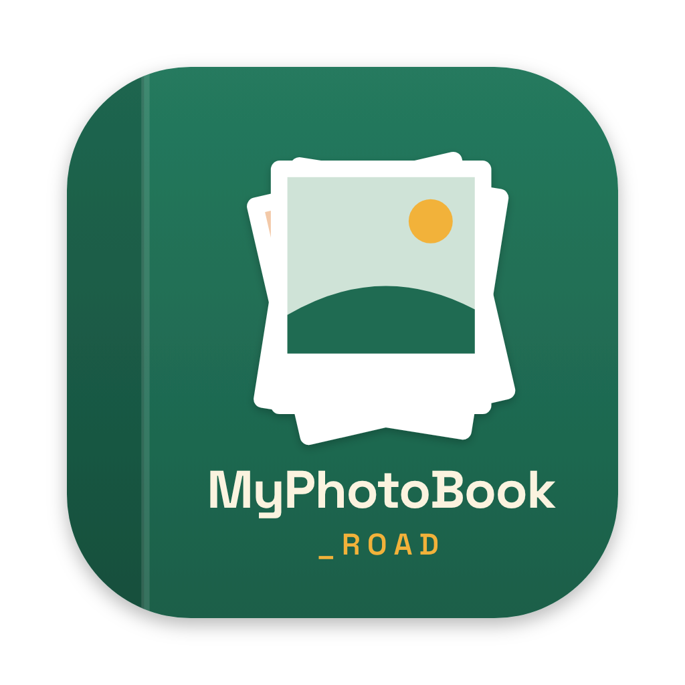
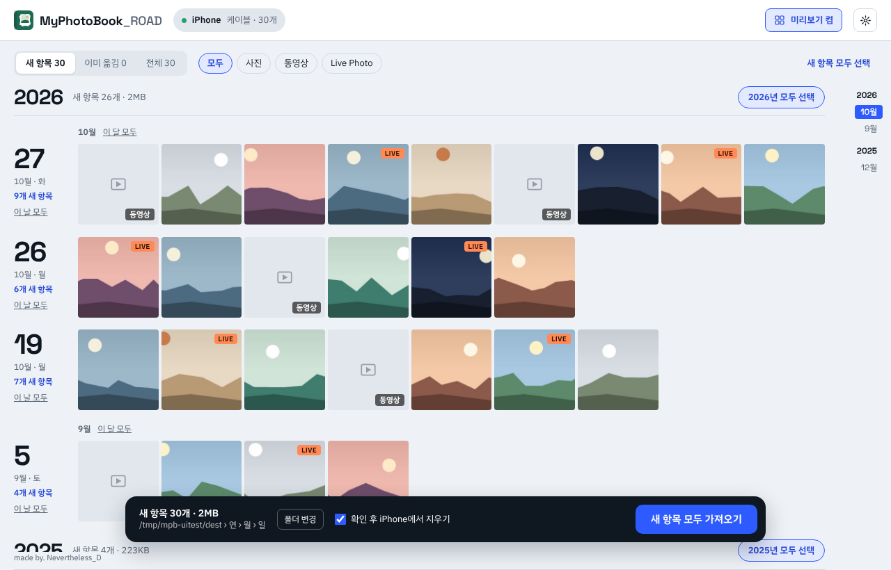

iPhone 사진 · 동영상을 케이블로 맥에 옮기고, 연 / 월 / 일 폴더로 정리해요
MyPhotoBook_ROAD.zip을 풀고 앱을 응용 프로그램 폴더로 옮겨요. 그래야 자동 업데이트가 돼요.
처음 열 때 경고가 뜨면 시스템 설정 › 개인정보 보호 및 보안 맨 아래 ‘그래도 열기’를 눌러요.
케이블로 연결하고 잠금을 풀어요. iPhone에 ‘이 컴퓨터를 신뢰하겠습니까?’가 뜨면 신뢰.
맥이 iPhone 사진에 다가가도 되는지 물으면 허용을 눌러요. 그다음부터는 연결만 하면 바로 목록이 떠요.

사진 · 동영상 모두 찍은 날짜로 나눠요. LIVE 사진과 영상은 같은 이름으로 나란히. 같은 이름의 다른 파일이 있으면 _1을 붙여요. 저장 위치는 설정이나 아래 막대 폴더 변경에서 바꿔요(외장 디스크도 돼요).